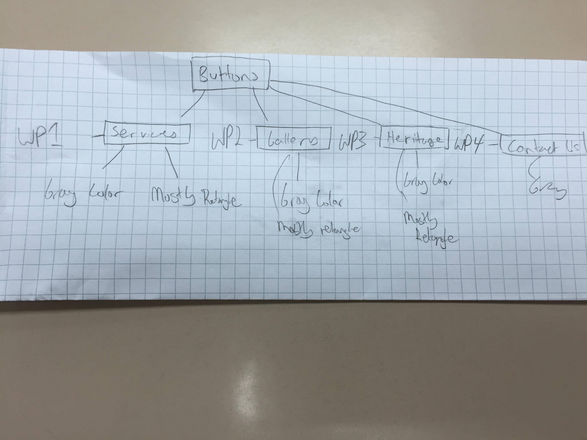

I redesigned my main wireframe for the homepage. This is because my old wireframe was not capable of being consistent. I realized consistency was very important in attracting users and feel a sense of unity


To maintain consistency the wireframes show resemble that the blue color can be either modified or changed. The red color is an editable region however the size or poiitioning is strictly limited.
The purpose of this project is so Helen's granddad(client) can expand his photography business by attracting today's new high technology generation.
The purpose of this project is for the audience to know the location, services, photographers, history, etc etc.
The audience of this project are new generation adults and teenagers who want to have either passport/visa sized photos or formal posing photo (family, friends, wedding)

The flowchart will match the website's categories. Moreover we even plan to have hovering categories to resemble the indepth information shown in the flowchart above.
I feel the flowchart is quite indepth and it resembles and completes all the information needed.
I want my website to look organized. I want the user who wants a photograph taken to feel that the website is organized and they should easily find what they are looking for.
Overall the intended message the website is giving is that the photograhpher is a very well respected photograhper, very experienced, and highy skilled.
The theme is quite simple, because we want users to quickly find what they are looking for.
The banners for each page will be the exact same thing, same
The font is Verdana, Geneva, sans-serif. Looking at it from elements of design the font is relatively big and very clear. It has a good amount of space between each of the words which makes it easier to read. We predict users to even range upto senior citizens that use technology, so even
The title or heading colors would be most probably be black. I feel that black is a much more bold and effective color and stating something. Title and headers are major statements, they state what this page is about and inform them on the reason they are on this page. It allows the user to confirm if he is on the right page and that will be easily reconginzed by looking at the black title/heading.
The font for the descriptions on the contect pages will also be Verdana, Geneva, sans-serif. This is because we want to maintain consistency for the whole website. If font's change in relatively close regions then users can feel out of place. They could possible lose their purpose and interest. Moreover, just feel that they all of a sudden do not belong there, this is due to having a first schema set for how the website is. If they like the first outlook of the website then the schema is set, changing things could disturb what they expect.
The description colors will usually be black, grayish, to silver. Infact, I working with firework to use a pellet to make a combiniation all gray , silver, and black to see how it looks.
The navigation bar will be just below the logo. This will allow users to straight away get into their purpose for what they visited their site. So it will be relatively around top middle of the webpage.
On the navigation bar the contexts will be buttons that help users navigate through vague purposes they could possible interested. Dont worry, I know vague is not good, however this will allow users to enter where they are interested and view their choice in much more detail. There will be four buttons that resemble four choices. The context are, services, gallery, heritage, and contact us.
The navigation bar will be on every page because this will allow users to quickly run through pages without going back to home. Moreover, they can go to any other page and go to home anytime. I believe this will allow users to save time and find their purpose for visiting their webiste much quicker. This also allows to maintain consistency and keep them feeling belonged without losing interest.
The navigation bar will allow users to know which page they are on. This is because the button they click on through the navigation bar will allow the user to visit their subject on interest will be slighly highlighted or shaded. If not highligted or shaded it will be illusioned to look like it has been pressed. This is a really good illusion because it shows that the user has literally pressed that button and they are currently on that site.
This is the mini wireframe I had created for my navigation bar.
This is the homepage I made in fireworks Click here to view my dreamweaver progress